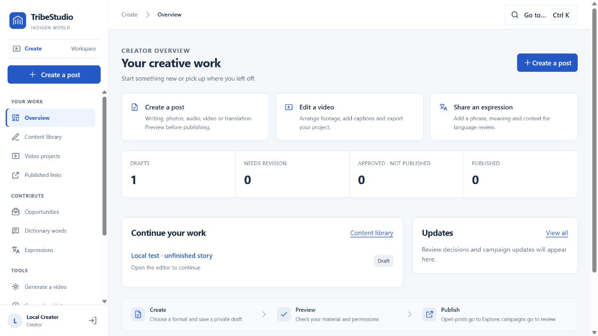
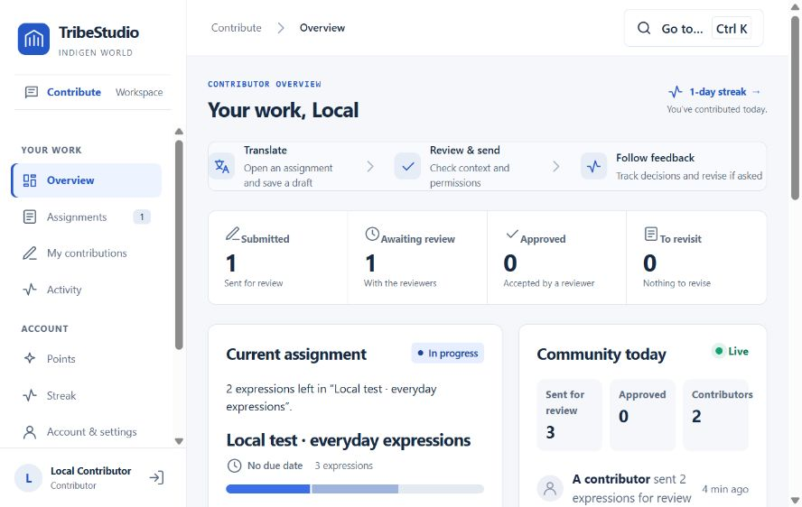
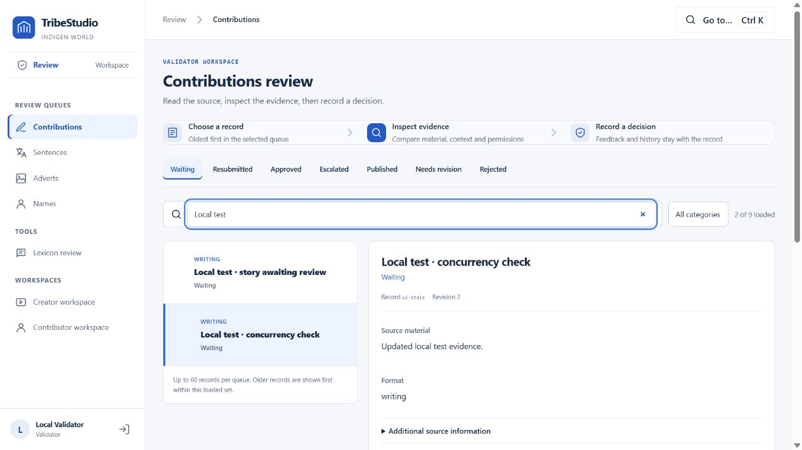
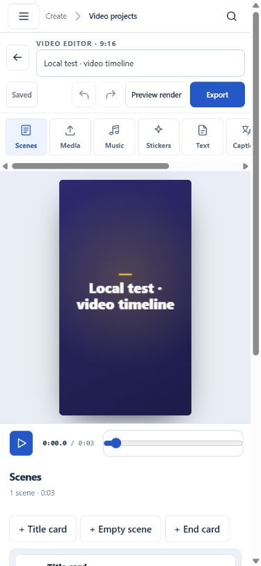
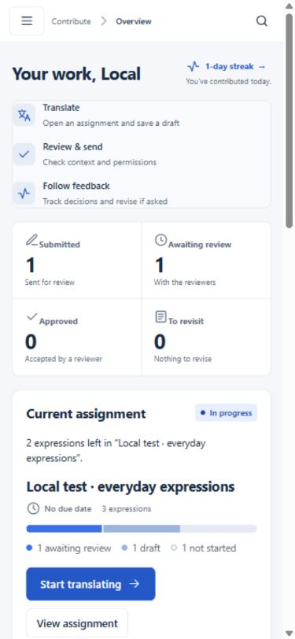

TribeStudio, the contributor portal and the validator portal have been rebuilt around the work people come to do. They share clearer navigation, concise task guides, consistent controls and a restrained blue design.
Availability: this reconstruction is implemented and tested locally. It has not been deployed to production. The screenshots show isolated test accounts and clearly labelled test records, not community submissions.

Start a post, resume a saved draft, work on a video or contribute an expression from one workspace map. Writing, image, audio, video and translation keep their distinct fields and previews. Source media is available on the saved content detail screen, and publication status follows the actual record.
Video projects keep their scenes, media, timeline, captions and export workflow. The editor adds a local recovery copy, save feedback and retry controls for media previews. A project created before an upload failure can be reopened with its successful uploads intact. Open posts still publish to Explore; campaign submissions still go through the established review process.
Assignments, drafts, feedback and contribution history are grouped together. Review your translation and recorded permissions before confirming a submission. Returned work keeps the earlier text and feedback so you can correct it and send another round.

Account details, sign-in settings, visibility, payment verification, points and redemption history remain accessible. Points retain the configured redemption rules and are presented separately from bank and MoMo payments. Invitations, account permissions and the existing training agreement remain in force.
The review workspace groups the existing contributions, sentences, adverts and names queues. Search and status filters help locate a record. Expression prompts and submitted translations can be compared side by side, while source details, recorded consent and review history stay available.

Decision controls describe their consequences and require reasons where the existing process requires them. If a record changes while it is being reviewed, decisions are disabled and notes remain available until the reviewer loads the current version. Compatible server checks reject decisions based on stale evidence.
The same workspace map opens in a keyboard-accessible drawer. Forms reflow, previews remain usable, and the video editor keeps labelled tools and save feedback. Motion is brief and respects reduced-motion preferences.


Existing records, draft IDs, role boundaries, service integrations and consent rules remain intact. Dictionary words, expressions and sentence records remain distinct. This update adds no contribution categories, reward rules, reviewer powers or bulk approvals. The public website is outside this phase.
Local checks exercised draft saving, audio upload and preview, a real MP4 export, publishing and withdrawal, contributor correction and resubmission, and stale-record handling. Automated checks cover frontend workflows, rendering, callable transitions and access rules. Production provider delivery, real bank verification, handset SMS and paid AI services still need configured-service checks before rollout. Review search currently covers the loaded queue of up to 60 records per status.
Once deployment is confirmed, Chinedum can update the availability statement and share the workspace links with the intended audience.